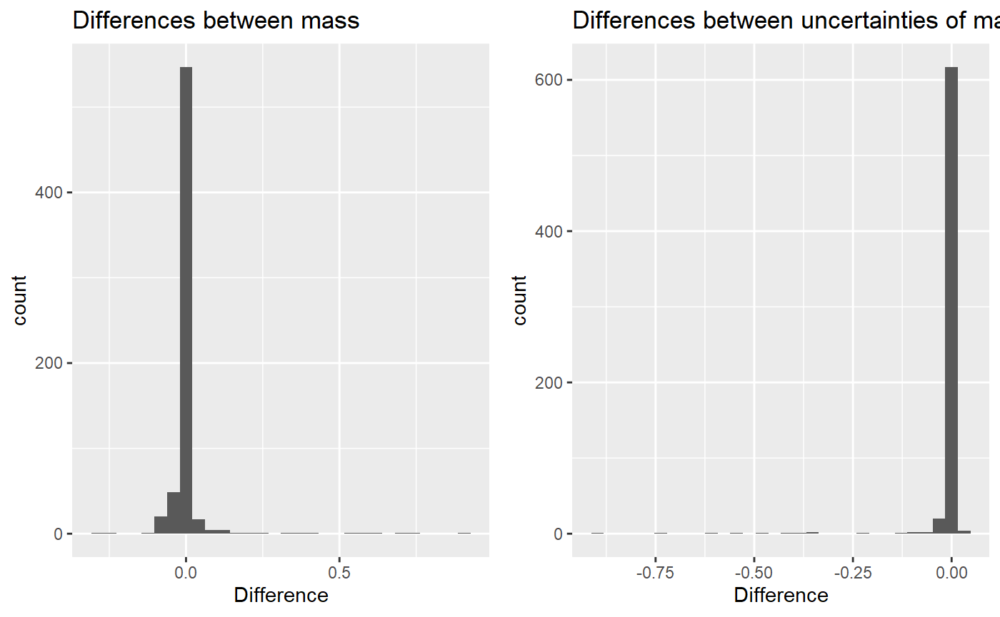

mass_comparison.RmdAs it is described in Data processing article, the data within each replicate of the experiment is aggregated using weighted mean. Below we present the effect it has on the results.
The whole workflow is described in the mentioned article. Here the focus is on the first aspect of the processing.
For the analysis, we use the example file from HaDeX.
library(HaDeX)
dat <- read_hdx(system.file(package = "HaDeX", "HaDeX/data/KD_180110_CD160_HVEM.csv"))As described, the first step is to transform the Center value (geometric centroid of the isotopic envelope for given peptide in a given state in given time point) and then to aggregate the values measured for different charge values. This is all done within each replicate.
The aggregation in our workflow is a weighted mean, with Inten (intensity) values as weights, as shown below.
avg_exp_mass = weighted.mean(exp_mass, Inten, na.rm = TRUE)Later, the results from replicates are aggregated using the mean, and their uncertainty is calculated as the standard deviation of the mean.
How the weighted mean change the result in comparison with the simple mean? Let’s see.
Below are calculated values of mass in two approaches and the difference between them for the example peptide.
## Sequence Start End State Exposure no_weight weight diff
## 1 ARSQKSGIRLQGHF 88 101 CD160 0.000 1585 1585 -0.00675
## 2 ARSQKSGIRLQGHF 88 101 CD160 0.001 1585 1585 0.00171
## 3 ARSQKSGIRLQGHF 88 101 CD160 0.167 1591 1591 0.00266
## 4 ARSQKSGIRLQGHF 88 101 CD160 1.000 1592 1592 0.00190
## 5 ARSQKSGIRLQGHF 88 101 CD160 5.000 1592 1592 0.00173
## 6 ARSQKSGIRLQGHF 88 101 CD160 25.000 1592 1592 0.00168
## 7 ARSQKSGIRLQGHF 88 101 CD160 120.000 1592 1592 -0.00247
## 8 ARSQKSGIRLQGHF 88 101 CD160 1440.000 1593 1593 0.00232
## 9 ARSQKSGIRLQGHF 88 101 CD160_HVEM 0.000 1585 1585 -0.00675
## 10 ARSQKSGIRLQGHF 88 101 CD160_HVEM 0.001 1585 1585 0.00171
## 11 ARSQKSGIRLQGHF 88 101 CD160_HVEM 0.167 1591 1591 0.00327
## 12 ARSQKSGIRLQGHF 88 101 CD160_HVEM 1.000 1592 1592 0.00363
## 13 ARSQKSGIRLQGHF 88 101 CD160_HVEM 5.000 1592 1592 0.00349
## 14 ARSQKSGIRLQGHF 88 101 CD160_HVEM 25.000 1593 1593 0.00915
## 15 ARSQKSGIRLQGHF 88 101 CD160_HVEM 120.000 1593 1593 0.00777
## 16 ARSQKSGIRLQGHF 88 101 CD160_HVEM 1440.000 1593 1593 0.00557Below are calculated values of the uncertainty of mass in two approaches and the difference between them for the example peptide.
## Sequence Start End State Exposure no_weight weight diff
## 1 ARSQKSGIRLQGHF 88 101 CD160 0.000 0.0000 0.0000 0.00e+00
## 2 ARSQKSGIRLQGHF 88 101 CD160 0.001 0.0000 0.0000 0.00e+00
## 3 ARSQKSGIRLQGHF 88 101 CD160 0.167 0.0185 0.0193 7.89e-04
## 4 ARSQKSGIRLQGHF 88 101 CD160 1.000 0.0133 0.0141 7.22e-04
## 5 ARSQKSGIRLQGHF 88 101 CD160 5.000 0.0985 0.0998 1.36e-03
## 6 ARSQKSGIRLQGHF 88 101 CD160 25.000 0.0157 0.0178 2.12e-03
## 7 ARSQKSGIRLQGHF 88 101 CD160 120.000 0.0144 0.0152 8.69e-04
## 8 ARSQKSGIRLQGHF 88 101 CD160 1440.000 0.0318 0.0329 1.07e-03
## 9 ARSQKSGIRLQGHF 88 101 CD160_HVEM 0.000 0.0000 0.0000 0.00e+00
## 10 ARSQKSGIRLQGHF 88 101 CD160_HVEM 0.001 0.0000 0.0000 0.00e+00
## 11 ARSQKSGIRLQGHF 88 101 CD160_HVEM 0.167 0.0378 0.0381 3.71e-04
## 12 ARSQKSGIRLQGHF 88 101 CD160_HVEM 1.000 0.0602 0.0602 1.02e-05
## 13 ARSQKSGIRLQGHF 88 101 CD160_HVEM 5.000 0.0119 0.0130 1.09e-03
## 14 ARSQKSGIRLQGHF 88 101 CD160_HVEM 25.000 0.0181 0.0159 -2.21e-03
## 15 ARSQKSGIRLQGHF 88 101 CD160_HVEM 120.000 0.0128 0.0144 1.59e-03
## 16 ARSQKSGIRLQGHF 88 101 CD160_HVEM 1440.000 0.0193 0.0205 1.18e-03And for the whole set of peptides, the average mass difference is:
## [1] 0.00499and uncertainty difference is:
## [1] -0.00925Below are the histograms of these differences.
